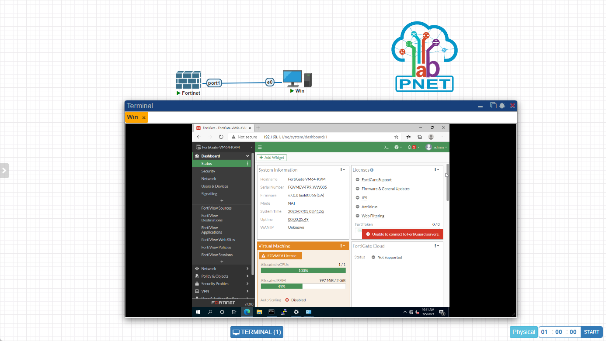
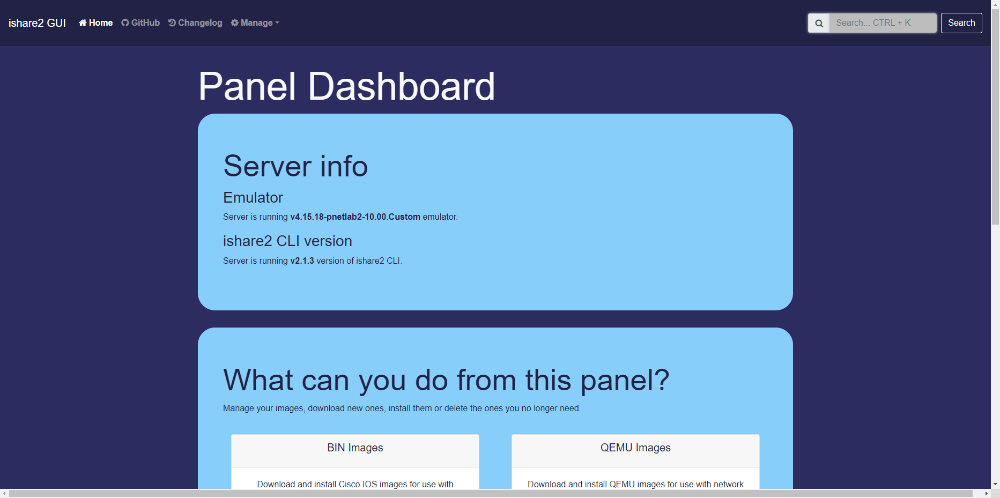

PNet-Lab 使用笔记
内网环境建议先配置OpenWRT 透明路由，只用Proxy 代理的话还是会有问题
PNet-Lab 应该是我见过最好用的网工实验室了。它一般运行于VMware 或VBox 之上，也可以裸机安装。并且：
- 相比于普通的客户端，它具有一个Web 界面，可以多用户同时使用
- 相比于EVE，它支持热插拔
- 自带了一款镜像管理软件
ishare2，可以方便地下载很多镜像- 不建议再安装pnetlab-v5.*，因为维护起来好复杂

安装过程
通过下载官方提供的v6.ova 镜像。下载并运行虚拟机后可以使用root/pnet 登录。
但是在安装ishare2 的时候，会遇到sourcelist 报404 的问题，这时需要将其注释掉（在/etc/apt/sources.list 文件中注释掉含repo.pnetlab.com 字样的行）。
然后再安装并更新ishare2 和ishare2 gui。

root@pnetlab:~# curl -o /usr/sbin/ishare2 https://raw.githubusercontent.com/pnetlabrepo/ishare2/main/ishare2 > /dev/null 2>&1 && chmod +x /usr/sbin/ishare2 && ishare2
root@pnetlab:~# ishare2 upgrade
root@pnetlab:~# ishare2
root@pnetlab:~# ishare2 gui install裸机安装
裸机安装分两步，先是安装系统，这一步与官网的教程一致。但是后面因为repo 不再可用，所以需要使用以下命令安装：
user@pnetlab:~$ sudo -i # 进入root 账号
# 升级到安装v5，前提是必须安装v4.10
root@pnetlab:~# bash -c "$(curl -sL https://labhub.eu.org/api/raw/?path=/UNETLAB%20I/upgrades_pnetlab/bionic/install_pnetlab_latest_v5.sh)"
# 安装v6
root@pnetlab:~# bash -c "$(curl -sL https://labhub.eu.org/api/raw/?path=/UNETLAB%20I/upgrades_pnetlab/Focal/install_pnetlab_v6.sh)"
root@pnetlab:~# reboot
# 安装ishare2
root@pnetlab:~# curl -o /usr/sbin/ishare2 https://raw.githubusercontent.com/pnetlabrepo/ishare2/main/ishare2 > /dev/null 2>&1 && chmod +x /usr/sbin/ishare2 && ishare2
root@pnetlab:~# ishare2 upgrade
root@pnetlab:~# ishare2
root@pnetlab:~# ishare2 gui install使用踩坑
- 在VMware 中运行虚拟机时，要注意勾选VT-x 虚拟化支持。否则基于QEMU 的镜像在启动后会闪退。
- 部分qemu 镜像会启动失败，可以切换qemu 版本重试，或者干脆换个版本的镜像试试。
- 在下载了镜像之后，最好通过网页中的
System --> System Setting --> Fix Permission修复一下权限，尤其是下载了Windows 的镜像之后。
使用代理
可能会用到，在当前会话中使用代理，配置了OpenWRT 透明路由后此节将不再需要：
## 在国内设置系统代理，如果本地局域网中没有代理的话，可以安装v2raya 服务在系统上
## 因为aria2c 工具需要用到下面两个环境变量，所以最好不要只使用all_proxy：
root@pnetlab:~# export http_proxy=http://ip:port
root@pnetlab:~# export https_proxy=http://ip:port
root@pnetlab:~# export ftp_proxy=http://ip:port
# root@pnetlab:~# export all_proxy=http://ip:port
# 因为代理的原因 ishare2 gui 不可用
# 并且ishare2 必须要走代理，所以可以将环境变量写入/etc/environment
# docker 切换国内源
root@pnetlab:~# vim /etc/docker/daemon.json
# 添加如下属性：
# "registry-mirrors": [
# "https://dockerproxy.com",
# "https://hub-mirror.c.163.com",
# "https://mirror.baidubce.com",
# "https://ccr.ccs.tencentyun.com"
# ]
# 重启docker 服务
root@pnetlab:~# systemctl daemon-reload
root@pnetlab:~# systemctl restart dockerV2rayA 代理的安装
配置了OpenWRT 透明路由后此节将不再需要。如果本地电脑上已经安装了v2ray 则只需启用局域网代理功能即可。如果没有，则可以在Ubuntu 上安装v2raya 服务，此服务会启动一个web 管理接口。万不得已再用此方法：
## 安装v2ray-core
# 访问raw.githubusercontent.com 可能需要修改hosts
curl https://raw.githubusercontent.com/v2fly/fhs-install-v2ray/master/install-release.sh > install-release.sh
sudo chmod +x install-release.sh
sudo ./install-release.sh
sudo systemctl disable v2ray --now
## 安装v2raya 服务
wget -qO - https://apt.v2raya.org/key/public-key.asc | sudo tee /etc/apt/trusted.gpg.d/v2raya.asc
echo "deb https://apt.v2raya.org/ v2raya main" | sudo tee /etc/apt/sources.list.d/v2raya.list
sudo apt update
sudo apt install v2raya
sudo systemctl start v2raya.service
sudo systemctl enable v2raya.service